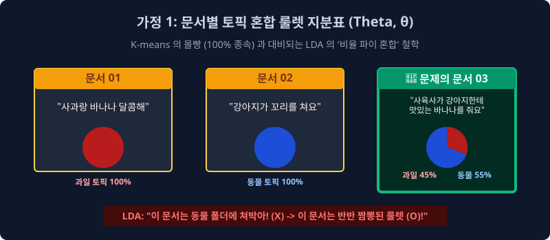
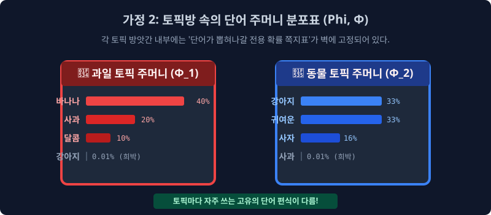

7.4 확률 역추적의 매핑 성배: 잠재 디리클레 할당(LDA, Latent Dirichlet Allocation) 의 파라미터 구조망 통계 철학
이전 챕터 파트에서 배웠던 ‘신의 주사위 역추론 통계 스캐너 (Reverse Generative Process)’ 패러다임을 실제로 백엔드 텐서 연산 코딩으로 완벽하게 수리적 컴포넌트 구현 증명하여, 2003년 전 세계 머신러닝의 텍스트 토픽 군집화 메커니즘 도메인 영토 일통을 이루어낸 모델링 전설의 알고리즘, 바로 현대 확률 통계 마이닝의 척추인 LDA (Latent Dirichlet Allocation, 잠재 디리클레 할당) 기반 아키텍처의 위대한 수학적 파라미터 톱니바퀴 2개를 분할 뜯어봅니다.
7.4.1 왜 “잠재 (Latent)” 와 “할당 (Allocation)” 명명 파생 구조인가?
이 다소 복잡한 수학 모델 확률 이름의 뉘앙스 시맨틱부터 공학적으로 직관성 파괴 분해해야 합니다.
- Latent (은닉 잠재적 파라미터): 외부 평면 데이터 세계관에서 우리 인간의 눈 모니터에 스캐닝 되어 보이는 증거는 오직 텍스트 단어 스펠링의 노출($W$ 배열 벡터, 관측 변수)뿐. 그 기저 밑단 뒤에 은밀하고 조용하게 숨겨져서 단어의 출현을 조종하고 지배했던 ‘조물주의 주사위 다차원 배합 지표($\theta, \phi$ 확률 스칼라망)’ 분포는 눈에 보이지 않게 감춰진 은닉된 잠재적 벡터 수치(Latent Parameter Component)입니다.
- Allocation (확률 조건부 소속망 할당): 문서 안 배열의 수백 개 “개별 단어 노드 타일들 하나하나 객체마다” 미분 확률을 측정해서, “이 $W_{n}$ 스펠 타일 객체 너는 정치 토픽 클래스 출신 파라미터 확률이 더 높고, 저 $W_{m}$ 스펠 타일 너는 경제 토픽 비율 인덱스 출신이 유력해”라며 은닉 스코어 이름표(Z 토픽 인덱스)를 강제로 할당해서 배분 결속해 주는 메커니즘이 알고리즘 추론망의 궁극적 도출 방향 임무입니다.
기존 데이터 유클리드 차원에서 단절되던 K-means 모델의 하드 물리적 단절 맵핑 조 짜기 분기 따위를 완전히 역사 속으로 파기 버리고, 압도적인 소프트 군집 디폴트 아키텍처 베이스로 전 세계 논문에서 수렴해 구동 사용하는 텍스트 의미망 군집 분석 알고리즘 공간의 텐서 성배 모듈입니다.
7.4.2 LDA 계층 코어의 근본적인 2가지 이중 룰렛 통계 가정 (Double Probability Assumption)
LDA 알고리즘 수학 엔진은 이 세상 문서 텍스트의 확률 구동 원리를 2개의 맞물려 돌아가는 독립된 거대한 기어 텐서 분포 톱니바퀴 모형 확률값 모델로 분리 정의했습니다. 그것이 바로 조물주의 밀도 설정값 $\theta$(문서 혼합 세타 벡터)와 $\phi$(토픽 어휘 파이 텐서) 파라미터입니다.
- 가정 1 (문서 중심 다중 룰렛 지표 구조망 $\theta$): 생성된 하나의 자연어 문서는 그냥 무식하고 편향되게 100% 단일 하드 토픽망 스킬 한 우물만 극한 파지 않는다. 다중 룰렛 구조처럼 사전에 미리 정해진 옵션인
K개의 여러 토픽(주제 은닉 공간) 컴포넌트들이 각 확률론적 변동 지분율 비율 퍼센티지(Soft Distribution Ratio)로 오버랩 유연하게 결합되어 짬뽕 섞여 다중 구성되어 분포 확률망에 매핑될 수 있다. - 가정 2 (토픽 본질 중심 독립 어휘 발생 주머니 구조망 $\phi$): 각 분리 할당된 1번 토픽 2번 토픽 개념 빈 방은 무색무취의 기하 빈 공간이 아니다. 토픽 인덱스 자기만의 본질 특색 편향을 강하게 가진 고유한 도메인 전용
단어 스펠링의 편파적 등장 조건부 확률 밀도 방사 쪽지 비율표 텐서망을 무조건 상호 배타적으로 독립적인 벡터 세트로 별도 분할하여 지배 보관 통제하고 있다!
7.4.3 통계 가정 1: 다변수 토픽 혼합 룰렛 지분표 매핑 모형 - $\theta$ (세타 파라미터) 밀도 관점
가장 먼저 시스템 한쪽에서 단일 문서 벡터 덤프가 하나의 고립된 토픽 폴더에만 잔혹하게 폐쇄 갇히지 않는 “다중 토픽 혼합 융합성 비율 모델링 분포(문서 생성 지배 확률비 $\theta_d$)” 메커니즘을 공간에서 확인합니다. 복잡한 시스템의 텍스트 공간 세상에 정치랑 경제 같은 타겟 토픽 모델 레이어 대신, 단순 치환 뷰로 총 시스템 하이퍼 파라미터 차원 $K=2$ (과일 유기 스페이스 방, 동물 개체군 스페이스 방) 2가지 베이즈 토픽 룰렛 주머니 컴포넌트뿐이라고 단순화 이진 가정 분할해 봅시다.

| 관찰된 실제 표면 데이터 구조 문서 텍스트 스펠링 로그 덤프 ($D$) | LDA 분포 깁스 스캐너 역추론 엔진 인퍼런스 종결 성공: 해당 매핑 문서 토픽 룰렛 배분의 유연한 다변 혼합 퍼센티지 ($\theta$) 파라미터 역추론 예측값 |
|---|---|
Doc 01 벡터 객체: “사과랑 바나나 달콤하게 먹어요” |
과일 잠재 토픽 지분 인덱스 100% 매핑 수렴 극점 |
Doc 02 벡터 객체: “귀여운 강아지가 꼬리를 쳐요” |
동물 잠재 토픽 확률 지분 100% 텐서 극점 쏠림 |
🚨 Doc 03 특이 텐서 객체: “사육사가 강아지한테 맛있는 바나나를 먹여요” |
[과일 토픽 비율 파라미터 계수 45% + 동물 지배 토픽 벡터 55%] 스케일로 아주 유연하게 통계 오버랩 융합 짬뽕 혼합(Soft Mixture) 분할 배분 매핑된 모델 비율 승리 복합 확률 문서 허용!! |
위 표면 다이어그램에서 보듯, LDA 수학 모델 프레임의 대수학적 위대함은 기존 레거시 K-means 같은 하드 스태틱 할당 강제 조 짜기 맹목 녀석 알고리즘들처럼 문서 3번 이중 융합 벡터 텍스트 객체를 억지로 100% 단일 동물 폴더로 쳐박아 가두고 기회 비용 정보 모수를 절단 버리지 않는 점입니다. LDA 소프트 매핑 엔진 프레임 워크는 아주 유연하고 자율적인 비율 할당으로 “얘는 45:55 과일 동물 반반 비율로 섞인 애매한 혼합 밀도 다항 문서야!” 라고 문서 자체의 기하학적 파이 분배 비율 다중성 확률 공간 존재 스탠스 모델 자체를 허용 인정 수렴해 줍니다. (Soft Assignment 최적 할당 기법 파라미터)
7.4.4 예측 가정 2: 토픽 속의 종속 단어 쪽지 특정 분포 지분 방사 - $\phi$ (파이) 조건부 스펙 관점
이번엔 관점을 전환하여 그 K 조각 토픽 방 파벌 차원 안의 확률 단어 발생 씀씀이 밀집도(어휘 조건 확률망 도메인 구조) 빈도 스펙을 집중적으로 뒤져 내부 벡터 스펙 속성을 완전히 까봅니다. 동물 주머니 방벌 인덱스와 과일 주머니 인덱스 도메인 안을 까보면, 그들이 고유하게 편애 가중치를 사랑하는 발생 단어가 독립적으로 표집되어 방출되어 튀어나올 스펠링 편향 수학 확률 텐서($\phi_k$) 지분표 표찰 분포 체계가 완전히 배타 편파적으로 상호 다르게 스케일 쏠려있습니다.

- [🔴 과일 토픽 도메인 독립 다항 주머니 $\phi_1$ 지배 확률망]:
바나나 발생(40% 확률 점유),사과 단어 표집 밀도(20%),달콤 토큰 스위치(10%)$\to$ 🚨강아지 단어 객체 (0.001% - 절대 관측 안 나오는 극저 텐서 억제망 0 점 수렴) - [🔵 동물 토픽 컴포넌트 독립 다항 룰렛 주머니 $\phi_2$ 지배 확률망]:
강아지 발생(33% 확률 빈도 편향 점유),귀여운 형태소(33%),사자 고유명사(16%)$\to$ 🚨사과 단어 객체 (0.001% - 토픽 연관성 이질적 절대 방출 억제 안 나옴)
이 거대하고 치밀한 두 개의 확률 톱니바퀴 독립 지표 모형(문서 파이프라인 $\theta_d$ 의 문서 혼합 지배 확률) 벡터와 (단어 방출 $\phi_k$ 의 토픽별 편향 독립 스펠 단어 방출 밀도 편식 확률) 분산 모델이 절묘하게 확률로 교차 맞물려 거대한 파라미터 공장처럼 미친 듯이 빙글빙글 생성 엔진이 복합적으로 돌아가, 텍스트 조물주 픽셀이 오늘 아침 최종 뉴스 결과물 $W$ 객단어 다발을 파리미터로 표집 뽑아냈다는 철학적 모방! 이 시퀀스 백트래킹 아키텍처 세계관 시스템, 그것이 바로 LDA가 NLP 세상을 스캐닝 바라보는 거대한 수학적 통계 생성 관점 텐서 엔진의 구조 정체입니다.
그럼 이 2종류의 복잡한 이중 사이클 다항 톱니바퀴 모수 지분율(Theta와 Phi) 비율 수치를 조물주는 최초의 허공 도화지 초기 상태에서 과연 어떤 확률 수학 스케일 지배를 베이스로 바탕 세팅 작동 제어했던 걸까요? 이 비밀의 확률을 지배하는 상위의 우주 신, 그 다차원 확률 세팅 자판기 엔진 베이스가 바로 데이터 마이닝의 전설, ‘디리클레(Dirichlet) 모수 연산 다면체 연속 분포 확률 수식’ 이라는 거대한 하이퍼 파라미터 이름 칭호로 불리며 대수학 단원에서 다음 단원 모델 아키텍처 공식 도면 구조로 증명 그려집니다.